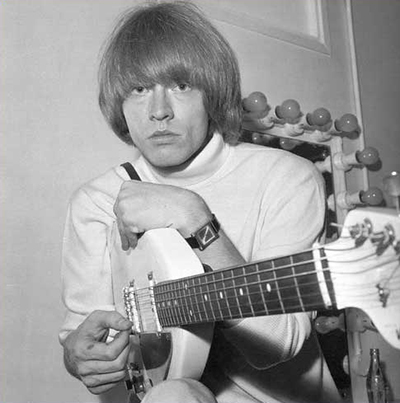

In 1962 a band was formed in London and they call themselves The Rolling Stones. Mick Jagger and Keith Richards along with Brian Jones started the band. They were joined by Dick Taylor on bass, Ian Stewart on keyboard, and Tony Chapman on drums. Taylor and Champan were replace within the year by Bill Wyman on bass and Charlie Watts on drums. Ian Stewart was eventually told he was not part of the main lineup anymore. In the early years The Stones sang and recorded covers of Blues bands. At the time Brian Jones considered himself as the leader until Jagger and Richards started writing their own music. Mick and Keith would later be called the Glimmer Twins.
The Greatest Rock and Roll Band
Watts,Richards,Jagger,Wood")
The Start
Brian Jones' Death
In 1969 The Rolling Stones decided to let Brian Jones go from the band due his drug issues. On July 3, 1969 a month after, Jones drowned in his swimming pool. The Stones still played a concert two days after his death and dedicated it to the memory of Brian Jones. It was a free concert in London's Hyde Park. It was also the first concert with Jones' replacement Mick Taylor. They played the concert infront of 250,000 fans.
Altamont and Mick Taylor Quits
At the end of 1969 The Stones played another free concert at the Altamont Raceway in California. Around 300,000 people attended and it ended up being a horrible experience for some. A biker gang provided security for the concert and ended up stabbing and killing a member of the audience. In 1974 with the band ready to record another album Mick Taylor quit The Rolling Stones. Taylor said he quit because he was fed up and wanted to do something else. Needing to find a replacement for Taylor the band turned to Ronnie Wood, a member of the band Faces with Rod Stewart.
The 80's
During the 1980's The Stones almost broke up. Mick Jagger and Keith Richards did not see eye to eye. The feud between the two got to appoint where each band member started making solo albums. Jagger even went on tour solo and even sang some stones songs on his tour. The Stones never officially broke up and in 1989 The Rolling Stones were inducted in to the Rock and Roll Hall of Fame. At this time Jagger and Richards set aside their differences and The Stones were back in the studio.
40 years
In 2002 The Rolling Stones celebrated their 40 year anniversary. They went on tour and and released an album consisting of their 40 biggest hits. They were even named in magazine article as on the 50 bands to see before you die. In 2005 they also released a new studio album the first one in eight years. Along with the album came another tour. This tour also had a free concert in Rio de Janeiero which had an estimated 1.5 million people in attendance. At the time the tour was also the highest-grossing tour of all time making $437 million dollars.
50 years
The year 2012 marked the 50th anniversary of The Rolling Stones. There was a book made about them along with another documentary movie. The Stones also released another compilation album with two new songs to celebrate the anniversary. They embarked on another tour in 2013 called "50 and Counting". With the band celebrating their 50 year mark the question is how long will they go?
A Quick Stones Reference
| Band Member | Birthday | Instrument | Years with Band | Reason for Leaving |
|---|---|---|---|---|
| Mick Jagger | July 26, 1943 | Lead Singer/Some Guitar | 1962-Present | |
| Keith Richards | December 18, 1943 | Lead Guitar/Some Singing | 1962-present | |
| Brian Jones | February 28, 1942 | Lead Guitar | 1962-1969 | Kicked Out/Died 1969 |
| Dick Taylor | January 28, 1943 | Bass Guitar | 1962 | Returned to Art School |
| Bill Wyman | October 24, 1936 | Bass Guitar | 1962-1993 | Retired From The Band |
| Tony Chapman | Drums | 1962 | Quit the Band | |
| Charlie Watts | June 2, 1942 | Drums | 1963-Present | |
| Ian Stewart | July 18, 1938 | Piano | 1962-1963 | Became Band Manager/Died 1985 |
| Mick Taylor | January 17, 1949 | Lead Guitar | 1969-1974 | Quit the Band |
| Ronnie Wood | June 1, 1947 | Lead Guitar | 1974-Present |
The Stones at Hyde Park Gallery
{kind=link}
{kind=link}
{kind=link}
{kind=link}
Sign Up
Don't forget to sign up to receive a monthly news letter about the greatest rock and roll band, The Rolling Stones. Just click the link below!!!!
Sign Up!